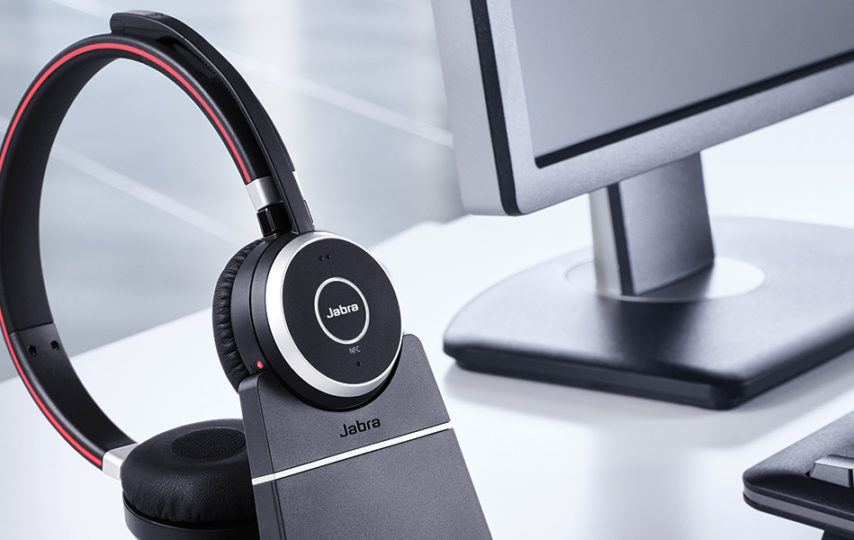

Headsets For Office Use

These Jazz-565 Hi Profile stereo headphones have an ergonomic adjustable one size fits all design and comes with an adjustable mic, 2.2m cable and gold plated 3.5mm audio in and out pins for more excellent sound performance. It is a perfect solution for music playback, video playback and video calling both at home and at the office.
Description
General Feature:
- Ergonomic headband design suitable for all head sizes.
- Rotating microphone can be adjusted up and down easily.
- Hi Profile stereo headphone with excellent sound performance.
- Antioxidant gold-plated pins, more realistic sound quality.
- Convenient Inline volume control.
Specification:
- Speaker Dimension: Phi 40 mm channel stereo
- Sensitivity: 116±3dB
- Frequency Response: 20 ~ 20000 Hz
- Rated Power: 20mW
- Power Capability: 30mW
- Impedance: 32 ± 10% Ohms at 1KHz without baffle
- Sensitivity: -38 ± 3dB (0dB =1V/PA)
- Frequency Response: 20 ~ 10000 Hz
- Directivity: Omnidirectional Condenser Microphone
- Impedance:
- Operation Voltage: 3V
- Operation Current:
- Cable Length: 220 ± 15 cm
- Plug Type: 2 x 3.5mm Gold Plated Plug (Audio & Mic)
What's in the box
1 x Jazz-565 Headset
1 x User Manual.
| Brand |
Jabra |
| Model |
Xenon 2 |
| Warranty |
Full 12 (months) |
| is Portable |
Yes |
| Fit/Style/Type |
Over Ear |
| Is Rechargeable |
Yes |
| Water Resistant |
No |
| Noise Cancelling |
No |
| Color |
Gray |
| weight |
8g |
| Barcode |
8886411935719 |